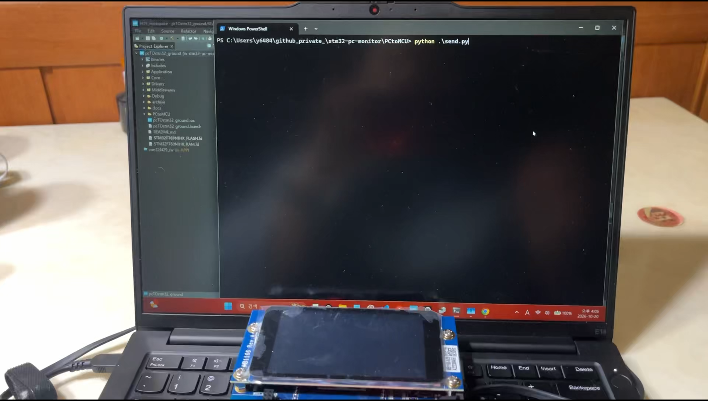

01 · PERSONAL PROJECT
STM32 PC Monitor
PC resource information was transmitted to UART and visualized as a real-time graph on the STM32 LCD. I personally implemented everything from data collection to MCU reception, storage, and output.
View detailed course →